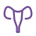
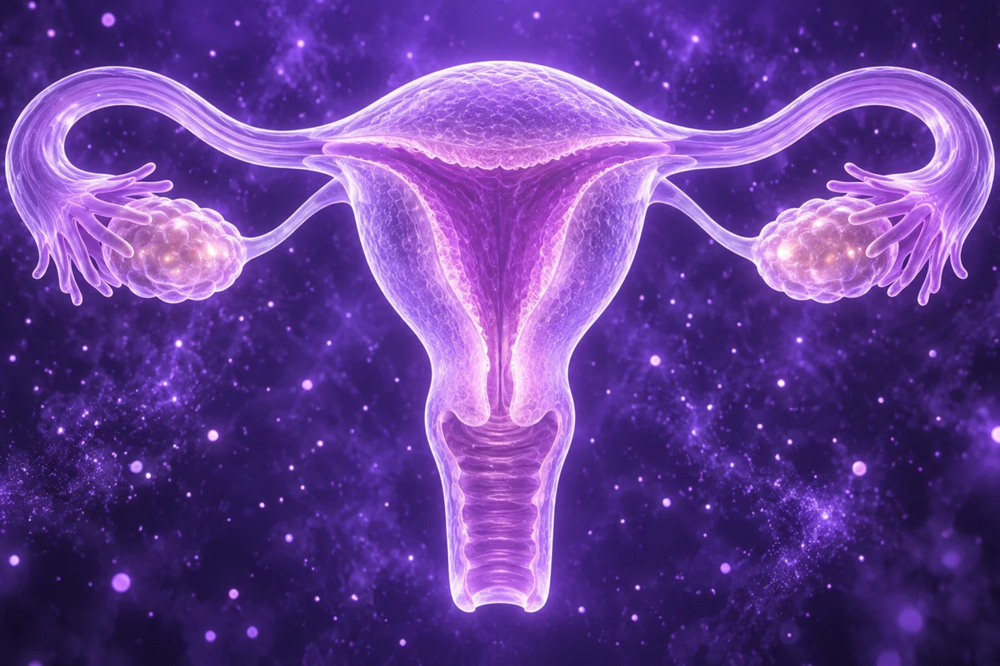
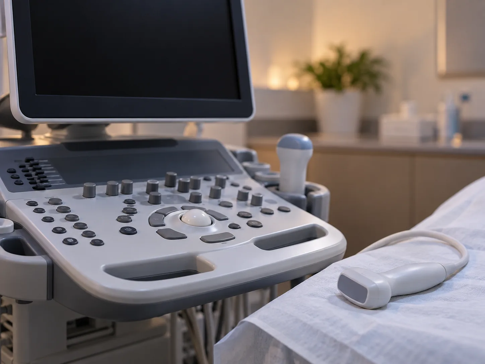
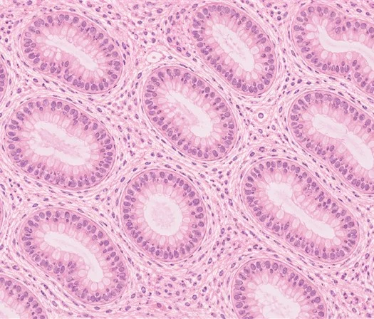
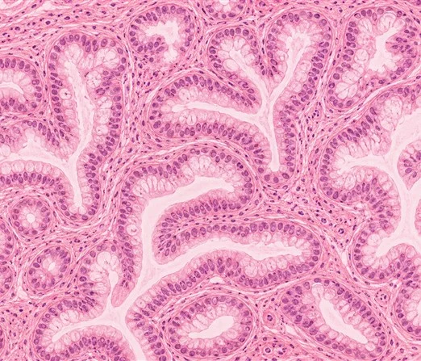
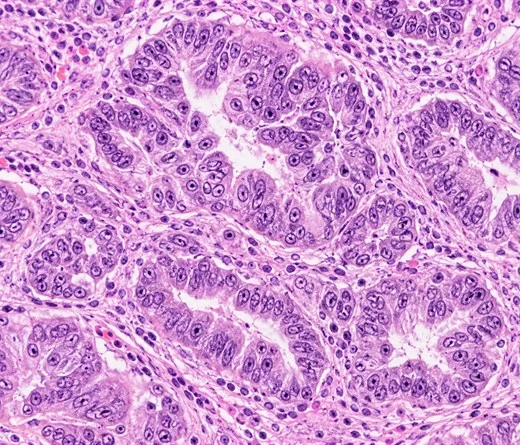
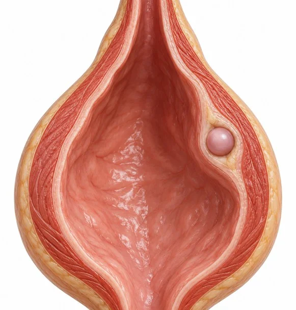
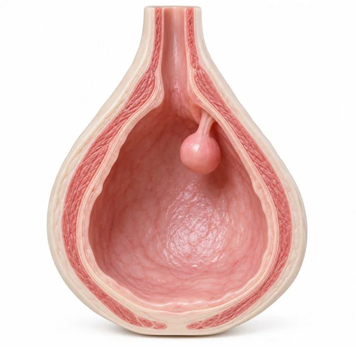
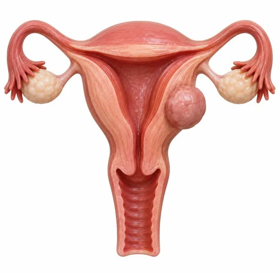
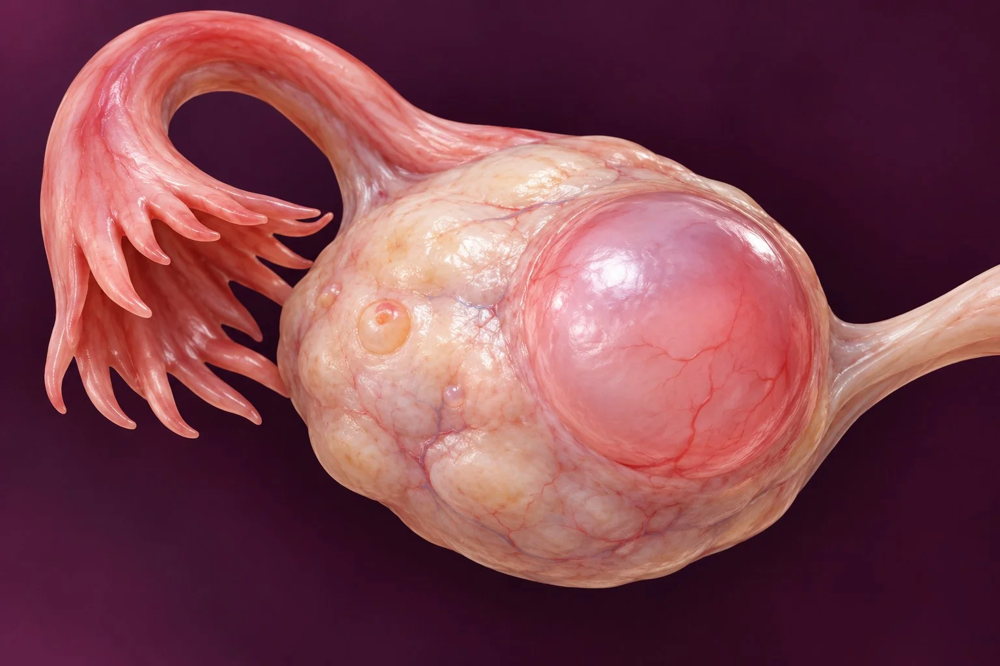

부인과 클리닉
증상과 검사 소견으로 질환의 종류를 구분해 진료 방향을 정합니다.
체계적인 진단으로
검사 소견에 따라 치료를 정합니다.

필요한 치료만
권합니다
작은 병변이 발견돼도 불편한 증상이 없다면 경과를 살피고,
증상의 정도와 임신에 미치는 영향을 살펴
시술을 권합니다.
검사 결과에 맞춰
진행할 치료를 정합니다.
나타나는 증상과 검사 소견을 함께 검토해
이후 진료에서
어떤 방법을 적용할지 설명합니다.
난임 진료와
함께 확인합니다
부인과에서 확인할 문제와 난임 관련 요인을
따로 보지 않고,
연결해 살펴보는 진료를 진행합니다.
다양한 원인을
함께 살펴볼 수 있습니다
정기 검진과 감염·종양 관련 소견을
여러 곳으로 진료를 나누기 전에
같은 진료 과정에서 확인합니다.
부인과 진료가 진행되는 순서
문진에서 확인한 증상에 따라 초음파와 필요한 검사를 시행합니다.
검사에서 확인된 상태와 임신 계획을 함께 고려해 진료 방법을 상의합니다.
증상 확인
느낀 증상을 묻는 상담에서
검사가 필요한 소견을 확인합니다
정밀검진
초음파와 혈액·조직 검사 가운데
진단에 필요한 항목을 정합니다
맞춤 설계
경과 관찰이나 약물·시술 가운데
현재 증상에 적합한 방법을 설명합니다
난임클리닉 연계
임신에 영향을 줄 수 있는 소견은
난임 검사 결과와 연결해 살핍니다
여성검진 · 예방접종
나이와 과거 검사 이력에 따라 확인할 항목을 정합니다
정밀 검사가 필요한 경우
다음 진료로 연결합니다.
임신을 계획하는 부부의 검사로
준비할 건강 상태를 살핍니다
여성 검진에서 추가 확인이 필요한 경우
난임 관련 검사를 이어서 검토합니다
연령대별 패키지로
상담한 내용을 바탕으로 필요한 검사를 계획합니다
대상별 검진 항목
| 대상 | 검진 항목 |
|---|---|
| 20대 여성 | 자궁경부암검사 · 확대경검사 초음파 · 질감염증검사 |
| 예비엄마 | 자궁경부암검사 · 감염병항체검사 호르몬검사 |
| 예비아빠 | 정액검사 · 감염병항체검사 |
| 중년여성(45세+) | AMH 등 호르몬 수치와 종양표지자 확인 노화검사 |
예방접종 주기표
| 백신 | 대상 | 주기 |
|---|---|---|
| HPV | 여성 9~45세 남성 9~26세 |
2~3회 |
| 풍진 | 임신계획 여성 | 10년 1회 |
| 파상풍 · 백일해 | 성인 | 10년 1회 |
| A형간염 | 40세 미만 우선 | 6~18개월 간격 2회 |
| B형간염 | 항체 없는 경우 | 3회 |
| 독감 | 65세 이상 · 임산부 | 매년 |
| 대상포진 | 50세 이상 | 1회 |
검진 프로세스
대상·연령 확인
필요 항목 검진
결과 상담
이상 소견 시 정밀검사 연계
질염 · 골반염 · 방광염
증상이 없을 때에도 검사 시기를 상의할 수 있습니다.

임신에 미칠 영향을 확인하며,
감염이 확인되면 균의 종류에 맞춰 약제를 검토합니다.
골반의 염증이 난관 유착으로 진행하면
임신에 영향을 줄 수 있으므로 증상이 있다면 진료를 받아보세요
세균, 칸디다균 또는 트리코모나스 등
감염을 일으킨 균에 따라 약제를 선택합니다
염증을 치료한 다음에도 임신과 관련한 소견을
함께 확인합니다
질의 감염은 치료를 미루면 다른 부위로 염증이 이어질 수 있습니다.
STEP 01
질염
질 내 균형 변화, 성접촉 및 과도한 세척 등
STEP 02
골반염
질염 미치료 시 상향 감염
STEP 03
합병증
난관 주변 유착과 통로 폐쇄가 임신에 영향을 줄 수 있음
질과 방광의 염증이 어떤 종류인지 검사로 살핀 뒤 치료 방법을 설명합니다.
방광의 감염은 질이나 골반 내 감염과 구분해 검사합니다. 요도의 구조와 성생활, 건강 상태 등이 관련될 수 있어 소변검사와 증상을 함께 살펴봅니다.
감염 위치와 균 검사 결과를 확인해 필요한 약물과 관리 방법을 설명합니다.
질 분비물 검사
감염에 관여한 균이 세균인지 진균인지 등을
구분합니다
골반 초음파
염증이 자궁이나 난관에도 있는지 살펴
확인합니다
소변 검사
방광염 여부와
감염 원인을 검사합니다
자궁내막증식증
조직 소견에서 확인한 세포 변화에 따라 관리 방법을 정합니다

난임 검사 소견도 함께 검토하며,
임신을 준비할 일정을 상의합니다
내막이 과도하게 자란 상태가 임신에 영향을 줄 수 있으므로
임신 계획에 맞춰 확인할 항목을 정합니다
조직에서 확인한 세포의 변화 정도에 따라
확인한 위험에 따라 검사 내용을 설명합니다
진행할 검사와 치료의 순서를
담당 의사가 설명합니다
증식증에서 보이는 조직의 유형을 살펴 관련 위험을 평가합니다.

단순증식증
암 진행률 낮음

복잡증식증
다소 낮음

복잡비정형증식증
자궁내막암 대표 위험요인(약 10%)
내막이 두꺼워진 원인으로 의심되는 호르몬 상태와 병력을 검토합니다.
배란이 불규칙하거나 여성호르몬의 균형이 달라진 경우에 내막이 과도하게 자랄 수 있습니다. 다낭성 난소 증후군 등 관련 질환도 함께 살펴봅니다.
초음파로 내막 두께 확인
조직검사로 위험도 분류
단계별 맞춤 치료 설계
자궁근종 · 선근증
가임기에 자궁근종이 발견되는 경우가 있으며 연령과 상태에 따라
볼 수 있는 질환 가운데 하나입니다.
근종인지 선근증인지 구분하고 진료 방향을 상의합니다.
크기와 생긴 위치, 형태를 구분한 뒤
필요한 치료와 몸에 미칠 영향을 상의합니다.
초음파를 비롯한 검사로
병변이 생긴 자리와 범위를 확인합니다
작고 불편한 증상이 없을 때에는 경과를 살피고,
증상이 있거나
임신과 관련한 문제가 확인되면
시술을 권합니다
담당 의사와 면담하며
검사 소견을 설명받고 관리 방법을 상의합니다
근종이 생긴 자리와 불편한 증상을 고려해 치료를 검토합니다.

자궁 안쪽(내막 아래)점막하근종
자궁 안으로 돌출되면 출혈과 임신에 영향을 줄 수 있습니다

자궁 근육층 안근층내근종
병변이 자라면서 생리 때 통증이나 눌리는 느낌이 생길 수 있습니다

자궁 바깥쪽 표면장막하근종
불편함이 없던 근종도 커지면서 주위 장기를 압박할 수 있습니다
자궁근종과 자궁선근증의 차이점
자궁근종
통증이나 출혈이 없을 때에도
볼 수 있는 질환 가운데 하나입니다.
자궁 근육에 생기는 양성 혹으로,
부정출혈이나 통증, 배변 불편과 임신의 어려움이 있는지 함께 확인합니다.
자궁선근증
자궁내막 조직이 자궁의 근육층 안에 있는 상태입니다.
생리혈이 근층에서 배출되지 못해
생리할 때 통증이 심하거나 출혈이 오래 지속되고 양이 많아질 수 있습니다.
난소양성종양
종양의 크기와 불편함을 확인한 뒤 경과 관찰 또는 치료를 검토합니다

난소 기능을
최대한 보존하는 방식으로 치료합니다.
대부분 자연 소실되는 낭종은
추적관찰로 지켜봅니다
임신 계획과 관련해 살펴야 할 자궁내막종 등은
난임 검사와 함께 확인합니다
시술이 필요한 경우에도
난소 기능을
최대한 보존하는 방식을 우선시합니다
영상 소견으로 종양의 종류를 먼저 검토합니다.
난포낭종
생리주기 연관, 대부분 자연 소실
황체낭종
배란 후 생성, 대부분 자연 소실
난포막황체낭종
호르몬 자극과 관련
자궁내막종
자궁내막증과 연관된 낭종
기형종
여러 조직이 섞인 양성 종양
장액성낭종
맑은 액체로 채워진 낭종
점액성낭종
점액질, 크기가 커질 수 있음
증상과 크기에 따라 다음 검사 날짜를 정합니다.
3cm 미만 · 무증상
3~6개월 간격 초음파 추적
3~5cm · 경과 관찰 필요
1~3개월 간격 정밀 추적
5cm 이상 · 통증 동반
시술 여부 상담 권장
평소와 다른 변화가 느껴지면,
진료에서 확인해 보세요.
월경량이 이전보다 크게 늘었어요
근종이나 선근증이 있는지 확인해 볼 수 있습니다
평소보다 생리통이 심해 약을 먹지 않으면 생활하기 어렵다
자궁의 병변과 관련된 통증인지 살펴봅니다
생리 날짜가 아닌 때 피가 비치거나 아랫배가 아프다
내막의 변화가 있는지 진료에서 확인합니다
질 분비물의 색이나 양이 달라지고 가렵거나 관계 중 아프다
감염으로 인한 증상인지 검사가 필요할 수 있습니다
소변이나 배변 시 불편한 변화가 있어요
방광의 감염이나 주변 병변의 압박과 관련될 수 있습니다
1년 넘게 임신을 준비하고 있어요
임신을 준비하는 검사에서 부인과 질환이 확인되기도 합니다

봄날
부인과 진료에서 확인하는 점
유형별 맞춤 치료
겉으로 비슷한 증상이 보여도 질환의 종류에 따라
적용할 치료를 달리 검토합니다.
추가 검사 결과에 따른 진료 연결
기초 검진에서 더 살펴볼 소견이 나오면,
검사 소견에 따라 필요한 진료로 이어갑니다.
각자의 증상 변화에 맞춘 경과 관찰
병변의 변화와 현재 증상을 고려해 다음 확인 날짜를 정하고,
다음 진료에서 변화 여부를 확인합니다.
부인과 클리닉,
봄날에서 답해드립니다
근종과 선근증이 동시에 발견되기도 하나요?
두 질환이 함께 있을 수 있습니다. 초음파 등 검사에서 위치와 양상을 살펴보고 현재 증상에 영향을 주는 부분을 중심으로 진료를 상의합니다.
난임을 검사하면서 부인과 질환도 살펴보나요?
임신을 준비하는 검사에서 자궁과 난소의 병변을 함께 살필 수 있습니다. 증상이 있다면 첫 상담에서 알려 주시면 필요한 항목을 검토합니다.
근종을 발견하면 바로 수술하나요?
작고 불편함이 없는 근종은 변화를 관찰하기도 합니다. 출혈과 통증, 위치 및 임신 계획을 검토해 치료가 필요한지 판단합니다.
검진 날짜는 어떤 기준으로 정하나요?
다음 검사 날짜는 연령과 증상, 이전 검사에서 확인된 상태에 따라 달라집니다. 진료 후 필요한 추적 간격을 안내받으세요.
아프지 않아도 자궁과 난소를 검사하나요?
통증 없이 발견되는 병변도 있습니다. 나이와 검사 이력, 임신 준비 여부를 알려 주시면 필요한 검진과 방문 시기를 상의할 수 있습니다.
임신 전 검사에 자궁경부 검사도 포함되나요?
임신 준비 상담에서 자궁경부 검사 이력 등을 확인합니다. 이전 검사 날짜와 결과를 참고해 이번에 필요한 항목을 정합니다.